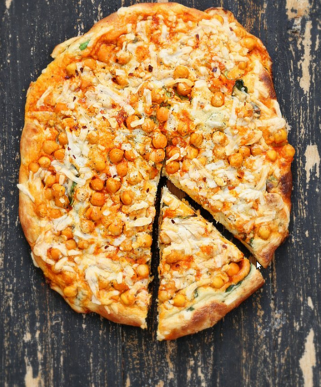

Home
Vegan Buffalo Chickpea Pizza
This Vegan Buffalo Chickpea Pizza with White Garlic Sauce and Celery ranch
dressing packs a ton of flavor and takes minutes to put together.

Ingredients
For the Buffalo Sauce Chickpeas
- 3 Tbsp hot sauce
- 1.5 Tbsp Sriracha hot sauce
- 2 tsp extra virgin olive oil
- 15 oz (425g) can chickpeas or 1.5 cups cooked chickpeas
White Sauce Base
- 1/2 cup ground cashew
- 3/4 cup (190) plant based milk
- 2 tbsp flour or 1 Tbsp arrowroot starch
- 2/3 tsp salt
- 1 Tbsp extra virgin olive oil
- a very generous dash of black pepper
For the garlic sauce
- 2/3 of the white sauce from above
- 4 cloves of roasted garlic or 1 tsp garlic powder
- 1/4 tsp onion powder
- 1/2 tsp italian herb blend
- 1 Tbsp nutritional yeast flakes
- 1 tsp apple cider vinegar
Celery ranch sauce
- 1/3 of the white sauce from above
- 1/2 tsp ranch seasoning
- 1/2 tsp celery seeds
- 1/2 tsp apple cider vinegar
Instructions
- Make the pizza dough according to recipe.
- Make the Buffalo chickpeas: Mix everything under buffalo chickpeas.
Mash a few chickpeas and let sit and marinate while you prep the sauce.
- Make the White sauce: Blend all the ingredients
under white sauce base until well combined into a smooth sauce.
- Make the White Garlic sauce: Take about a 2/3 part of the white sauce from above and add garlic sauce ingredients.
Mix well. Taste and adjust and mix or blend.
- Make the Celery Ranch: Add the ranch seasoning,
celery and vinegar and mix and keep ready.
- Shape the pizza dough to a 10 inch rounds with thick edges so the sauce does
not flow off the pizza during baking. Brush olive oil on it. Drizzle enough garlic sauce on the dough to coat.
Add spinach or greens or other veggies of choice.
- Layer buffalo chickpeas on the greens.
Drizzle some buffalo sauce from the marinade.
- Drizzle a generous amount of celery ranch.
Add vegan mozzarella cheese shreds (optional).
- Bake at pre-heated 425 degrees F / 220ºc for 14 minutes.
Broil for a minute to crisp.
- Drizzle any leftover garlic sauce or celery ranch before serving.
Recipe credit veganricha.com